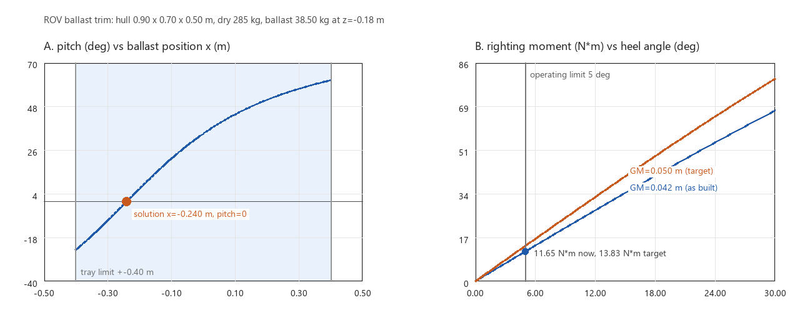

ROV 浮力-压载配平与初稳性核算
ROV 下水前第一件事不是写控制律，而是配平：把压载挂到对的位置，让净浮力为零、横倾纵倾归零， 并留下足够的初稳心高。这三件事任何一件没做好，推进器和控制器都要替配重背锅——上浮下沉要靠推力顶， 姿态偏差要靠推力掰，最后表现为"这个 ROV 不好控"。
本模块用静水静力学把这套账算清楚，只依赖 Python 标准库，不需要 NumPy、Matplotlib 或 ROS；
配图由 tools/make_figures.py 用 Pillow 从同一套函数生成。
全潜 ROV 与水面船的差别（最容易算错的一处）
水面船 GM = BM - (z_G - z_B), BM = I_waterplane / V
全潜 ROV GM = z_B - z_G 没有 BM 项
水面船横倾时水线面形状改变，浮心横向移动，才有了 BM = I/V 这一项；ROV 整体没入水中，
横倾时排水体积形状不变、浮心相对船体不动，恢复力矩只来自"重心低于浮心"：
GZ = (z_B - z_G) * sin(phi)
M_恢复 = Delta * GZ = Delta * GM * sin(phi) 对任意倾角成立，不限于小角度
把船那套 BM 直接套到 ROV 上会算出虚高的稳心高，进而低估倾角、配出过少的压载。
默认样机结论
默认参数：外壳 0.90 x 0.70 x 0.50 m（排水 0.315 m³ = 323.505 kg）、 六个部件合计 285 kg、压载托盘在船底 z = -0.18 m（限位 x = ±0.40 m、y = ±0.30 m）、 海水按 10 ℃/35 psu 取 1027 kg/m³。
| 指标 | 数值 | 说明 |
|---|---|---|
| 排水体积 / 排水质量 | 0.315 m³ / 323.505 kg | 长方体近似 |
| 干重 | 285.00 kg | 六个部件 |
| 浮力 / 重量 | 3172.5 N / 2794.9 N | 净浮力 +377.6 N（+13.51%） |
| 干重重心 | (0.0325, 0.0035, -0.0235) m | 机械臂前伸导致重心偏前 |
| 需要压载 | 38.505 kg | 中性浮力 |
| 空载倾角 | 横倾 +8.49°，纵倾 +54.08° | GM 只有 23.5 mm，偏心放大得很厉害 |
| 压载方案 | 38.505 kg @ (-0.240, -0.026, -0.180) m | 托盘限位内，可行 |
| 配平后 | 横倾 0.00°，纵倾 0.00°，GM 42.1 mm | 横摇周期 2.77 s |
| 倾角容差 | 2° 对应横向偏心 1.47 mm | 5° 对应扰动力矩 11.65 N·m |
两个值得注意的结论：
- 空载纵倾 54° 不是笔误。 重心比浮心高 23.5 mm、又前移 32.5 mm，
tan(θ) = 0.0325/0.0235就是 54°。ROV 的 GM 只有厘米量级，几十毫米的偏心就能造成几十度的姿态偏差，所以配平必须在 下水前做完，不能靠控制器在线纠。 - 42 mm 的 GM 仍然偏小。 按建议值 50 mm 反解，压载得放到 z = -0.246 m，也就是离船底只剩 4 mm。 这条结论比"再调调看"有用：在外壳几何不变的前提下，想拿到 5 cm 稳心高只能把配重贴底， 或者把电池舱下移、在顶部加浮力块。
1. 运行环境
只要 Python 3.8 及以上，运行时不依赖任何第三方库（配图另需 Pillow）。ROS 2 部分
（colcon build / ros2 launch）由 CI 在 Ubuntu 22.04 + Humble 上验证，见第 6、7 节。
cd src/water/rov_ballast_trim
python3 main.py --output outputs
python3 main.py --target-gm 0.05 --output outputs
python3 main.py --beam 0.80 --tray-y 0.35 --output outputs
实测环境：Windows 11 10.0.26200、Python 3.12.14；python3 main.py 实际输出：
==> rov_ballast_trim
外壳: 0.900 x 0.700 x 0.500 m, 排水 0.3150 m^3 = 323.50 kg (rho=1027.0 kg/m^3)
干重: 285.00 kg, 重心 (0.032, 0.004, -0.024) m, 浮心 (0.000, 0.000, 0.000) m
浮力/重量: 3172.5 N / 2794.9 N, 净浮力 +377.6 N (+13.51%)
压载需求: 38.50 kg
空载倾角: 横倾 +8.49 deg, 纵倾 +54.08 deg
空载初稳心高: 0.024 m (注意)
压载方案: 38.50 kg @ (x=-0.240, y=-0.026, z=-0.180) m 需要 (x=-0.240, y=-0.026, z=-0.180) m 可行
配平后: 横倾 +0.00 deg, 纵倾 +0.00 deg, GM 0.042 m (注意), 横摇周期 2.77 s
质量/净浮力: 323.50 kg, +0.0 N
容差: 2.0 deg 倾角对应横向偏心 0.0015 m (1.5 mm); 5.0 deg 扰动对应力矩 11.65 N*m
深度影响:
0 m rho=1027.00 kg/m^3 净浮力 +0.00 N 需补压载 +0.000 kg
100 m rho=1027.46 kg/m^3 净浮力 +1.42 N 需补压载 +0.145 kg
1000 m rho=1031.60 kg/m^3 净浮力 +14.21 N 需补压载 +1.449 kg
3000 m rho=1040.80 kg/m^3 净浮力 +42.63 N 需补压载 +4.347 kg
6000 m rho=1054.60 kg/m^3 净浮力 +85.26 N 需补压载 +8.694 kg
判定门限: GM>=0.050 m 正常, 0.020~0.050 m 注意, <=0 失稳; 静止倾角 <=2.0 deg
[提示] 未加压载时净浮力 377.6 N（13.5%），下水后会上浮 38.5 kg
[提示] 空载横倾 8.5 deg / 纵倾 54.1 deg，超过 2.0 deg 门限
[提示] 配平后初稳心高 0.042 m 低于建议值 0.050 m，建议压载下移
[提示] 压载 38.50 kg 装在 (x=-0.240, y=-0.026, z=-0.180) m，倾角归零，GM=0.042 m
结果写入 outputs/report.json（outputs/ 已进 .gitignore），report.json 里的每个数都能用
第 2 节公式手算复核。
--target-gm 0.05 的输出差异（其余相同）：
压载方案: 38.50 kg @ (x=-0.240, y=-0.026, z=-0.246) m ... 可行
配平后: 横倾 +0.00 deg, 纵倾 +0.00 deg, GM 0.050 m (正常), 横摇周期 2.54 s
容差: 2.0 deg 倾角对应横向偏心 0.0017 m (1.7 mm); 5.0 deg 扰动对应力矩 13.83 N*m
2. 公式
排水体积 V = L * B * H
浮力 F_B = rho * V * g
重量 W = m * g
重心 r_G = sum(m_i * r_i) / sum(m_i)
初稳心高 GM = z_B - z_G (全潜 ROV，无 BM 项)
横倾角 phi = atan((y_G - y_B) / GM)
纵倾角 theta = atan((x_G - x_B) / GM)
横摇惯量 I_xx = m * (B^2 + H^2) / 12
横摇周期 T = 2*pi*sqrt(I_xx / (Delta*GM))
允许扰动力矩 M = Delta*GM*sin(phi_limit)
海水密度 rho = 1027 - 0.20*(T_C-10) + 0.80*(S-35) + 0.0046*depth
三条反解（report.json 的 ballast_plan / tolerance 字段）：
压载质量 m_b = m_排水 - m_干重
纵向位置 x_b = -(m_干重 * x_G) / m_b 横向同理
目标 GM 的 z z_b = ((m_干重+m_b) * (z_B - GM*) - m_干重*z_G) / m_b
倾角容差 dy = GM * tan(phi_limit)
x_b、y_b 超出托盘限位时，程序把位置裁到限位并给出残余倾角，同时把方案标成不可行——
这一条比"给个漂亮数字"重要：装不上去的方案等于没算。
3. 判定阈值
| 量 | 阈值 | 含义 |
|---|---|---|
| 初稳心高 GM | ≥ 0.05 m 正常；0.02~0.05 m 注意；≤ 0 失稳 | 低于 20 mm 时 1 mm 偏心就有 2.9° 横倾 |
| 静止倾角 | ≤ 2° | 配平后的初始姿态偏差 |
| 作业倾角 | ≤ 5° | 机械臂等外扰下的允许倾斜 |
| 净浮力偏差 | ≤ 1% 重量 | 对应约 ±3.2 kg，超出说明压载没配够 |
GM ≤ 0 时程序不给横摇周期（null）、倾角记为 ±90°，并在 warnings 里标"失稳"——
这是物理上的翻覆，不是可以继续算下去的状态。
4. 配图

左图：固定压载 38.505 kg、安装高度 z = -0.18 m，只改纵向位置时纵倾角的变化。 浅色带是托盘 ±0.40 m 的可安装范围，红点是本模块给出的解（x = -0.240 m，纵倾归零）。 曲线在 x = 0 附近最平，越往外越陡——这就是"压载位置差几厘米、姿态差十几度"的由来。
右图：恢复力矩随横倾角的变化。5° 作业门限处，现状 GM = 42.1 mm 能扛 11.65 N·m， 把 GM 提到 50 mm 后升到 13.83 N·m。作为对照：50 kg 机械臂伸出 0.5 m 施加 25 N 侧向力就是 12.5 N·m，已经越过现状那条线（约 5.4° 横倾），所以抓取重物前要么降 GM 需求、要么限速。
5. 适用范围与限制
- 长方体外壳 + 集中质量点：真实 ROV 的框架、浮力块、缆绳与自由液面（若压载舱未满）都会让
重心/浮心与这里不同，要用实测的部件质量与位置替换
DEFAULT_COMPONENTS； - 静水静力学：不含推进器推力、缆绳张力、水流阻力与附加质量对静平衡的影响；附加惯量只用在 横摇周期的估算上（系数 1.3，典型 1.2~1.5）。倾角公式按净浮力为零（已配平）推导， 空载倾角（净浮力 +377.6 N）只是量级参考，不是真实的下水姿态；
- 横摇周期按均匀长方体惯量估算，实际分布（电池在下、电子舱在上）会改变 5%~20%；
- 海水密度是一阶近似，0~30 ℃、30~38 psu、0~6000 m 内与 UNESCO 状态方程偏差 < 0.3%， 不能用于盐度跃层或近岸淡水混合区的精密配平；
- 深水压缩只算了海水密度变化，没算耐压壳与浮力块的体积压缩；后者对全海深 ROV 是同一量级， 需要单独的 p-V 曲线。
6. 测试与验证
cd src/water/rov_ballast_trim
python3 test/test_ballast_trim.py # 没有 pytest 时直接跑
python3 -m pytest test -v # CI 上用
18 项检查全部通过，期望值都能手算核对：
- 海水密度的四个单调方向与 3000 m 的 1040.80 kg/m³，以及温度/盐度/深度的越界拒绝；
- 对称部件重心归零、偏置部件按质量比偏移、空列表报错；
tan(phi) = offset/GM在 offset = GM 时正好 45°，负偏心给负角，GM ≤ 0 给 ±90°；- GM 四档判定（失稳/注意/正常）的边界值；
- 默认样机的排水量 323.505 kg、干重 285 kg、压载 38.505 kg、重心三个分量；
- 空载 GM 23.5 mm 与 54° 纵倾的闭式解；
- 压载方案让净浮力归零、横倾纵倾归零，质量守恒；
- 配平后 GM = 42.1 mm 与手算的 z_G 一致；
- 目标 GM 反解（0.05 m → z = -0.246 m）正反算互逆，超出外壳范围判不可行；
- 托盘限位裁剪：机械臂前移后需要 -0.69 m，判不可行并给出残余倾角；
- 质量全堆顶部时 GM < 0、横摇周期为
null、扰动力矩报错； - 横摇周期与 1/√GM、√附加惯量的比例关系；
- 2°/5° 容差与 11.65 N·m 的扰动力矩；
- 深度扫描的单调性与 3000 m 的 4.347 kg；
report.json字段自洽且可 JSON 序列化；GBK 控制台打印不抛UnicodeEncodeError；CLI 冒烟。
CI：.github/workflows/rov_ballast_trim_tests.yml 有三个任务——Ubuntu（Python 3.8，跑 pytest、
无 pytest 直跑、main.py 冒烟、GBK 复跑与配图重生成）、Windows（GBK 控制台再跑一遍），以及
ROS 2 Humble（官方 ros:humble 容器，与上游 ros2_rov_pipeline_follow 的写法一致，
colcon build --packages-select rov_ballast_trim 后跑两次 ros2 launch，断言
report.json 的 GM 与压载量）。
另有 test/test_packaging.py 6 项打包一致性检查，同样不依赖 ROS：package.xml 能否解析、
setup.py 的 entry point 与 cli.py 是否对得上、data_files 引用的文件是否存在、launch 声明的参数
与 cli.py 的 add_argument 是否一一对应、文档与 CI 引用的路径是否存在。这些正是 colcon build
失败时最常见的几类错误，先在本地拦住。
网页渲染：本页用 mkdocs 1.6.1 + 与仓库相同的插件栈（bibtex / video / mermaid2 / grid-tables /
mdx_math）做了局部构建验证，页面与配图正常生成；全站 mkdocs serve 留待仓库环境复查。
7. ROS 2 与 HoloOcean 的接入
launch/main.launch.py 用 ExecuteProcess 直接调 CLI，不需要 rclpy。能不能被 colcon 正确安装、
launch 能不能起来，是两件独立于算法的事，分开验证：
- 打包一致性（已做）：
test/test_packaging.py6 项，检查 package.xml、setup.py 的 entry point 与data_files、launch 参数与 CLI 参数是否一一对应、文档与 CI 的引用路径是否存在； - colcon build + ros2 launch（已由 CI 跑通）：
ros2任务用官方ros:humble容器 （不走setup-ros的网络下载，避免偶发失败），colcon build --base-paths src/water/rov_ballast_trim --packages-select rov_ballast_trim编译后，跑默认参数与target_gm:=0.05两次ros2 launch，并断言report.json里的gm_m（0.042135）与required_ballast_kg（38.505）与离线结果一致，两次 launch 均通过。
构建时有一个仓库布局上的坑：上游 src/water/package.xml 会把 src/water 整体识别成一个
ament_python 包 water，colcon 认定该目录是包后不再向下递归，本模块因此不可见
（表现为 0 packages finished）。必须显式限定发现范围，与上游 ros2_rov_pipeline_follow
的写法一致：
colcon build --base-paths src/water/rov_ballast_trim \
--packages-select rov_ballast_trim --symlink-install
接到 HoloOcean 的路径是：
- 从 HoloOcean 的 agent 配置读出各部件质量与位姿（或实测后用
Component列表替换默认值）； - 用
RovTrim.report()的ballast_plan决定配重块质量与安装位置，写入 agent 配置； - 下水后用
/odom或 IMU 的横滚/俯仰角回填，与trim_dry的预测值对照，偏差大说明部件位置表不准。
这一段属于"设计校核 → 仿真验证"的接口说明，本文没有对应的实跑记录。
使用声明
使用 DeepSeek Harness（deepseek-flash）辅助实现、测试与文档；作者对提交内容负责。 默认样机的质量表与尺寸取自常见的 200~300 kg 级作业型 ROV 量级，不是某一台真实机型的实测数据； 使用者需按自己的部件表替换后再作结论。